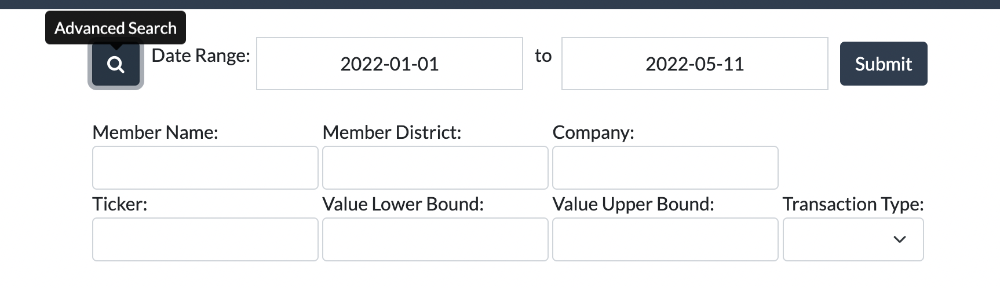
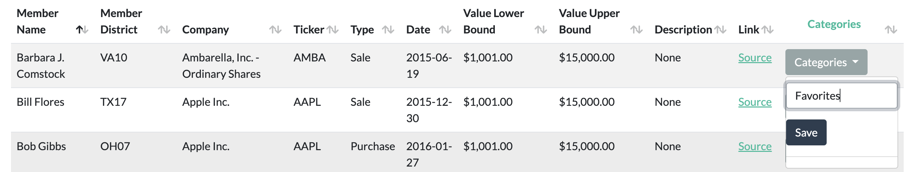
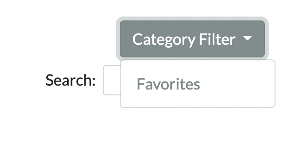
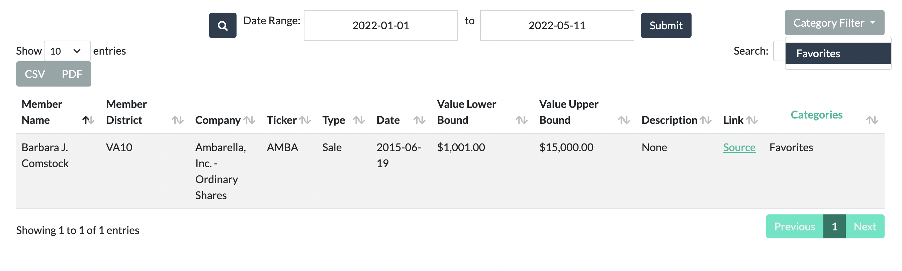
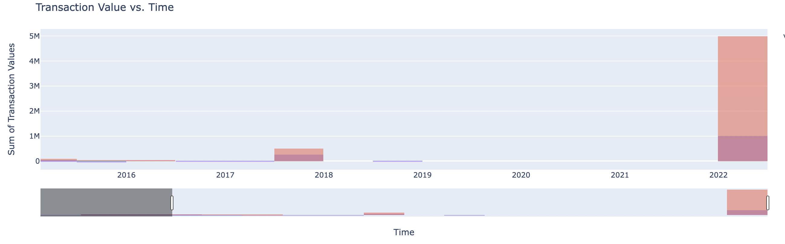
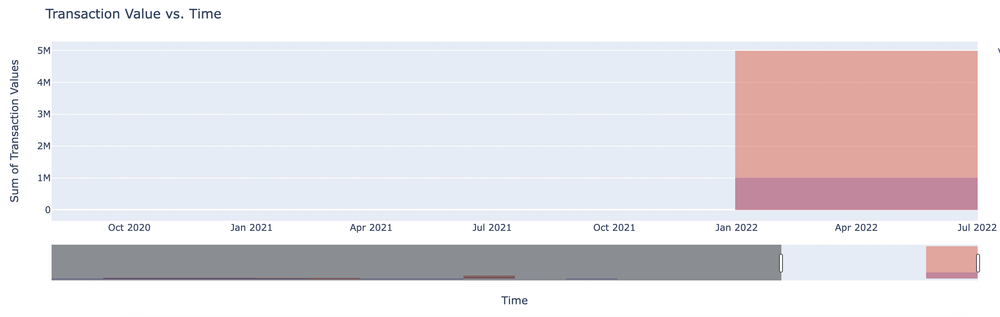
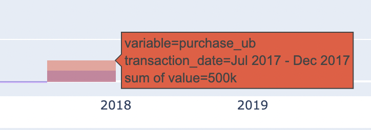
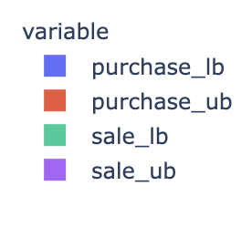

About
The Congressional Stock Trading Monitor will be a tool that assists users in collecting, parsing and viewing data about stock market transactions that members of the U.S. House of Representatives publically report.
User Documentation
On the Congressional Stock Trading Monitor webpage, users can retrieve information and data pertaining to the U.S. House of Representatives stock market transactions. The Congressional Stock Trading monitor consists of three main pages that can be accessed through the navigation panel:
- Transactions page (homepage): shows list of transactions
Includes the following data for each transaction: U.S. House of Representatives member name, member district, company, ticker, type of transaction (purchase/sale), lower bound value of the transaction, higher bound value of the transaction, transaction description, a link to the official pdf of the stock transaction, and an option to add/delete the transaction to a category.

- Representatives page: shows list of representatives along with their aggregated purchased/sold stock data
Includes the following data for each representative: U.S. House of Representatives member name, trade count, transaction purchase count, transaction sale count, average transaction value, lower bound and higher bound value of the purchase range, and lower bound and higher bound value of the sale range.
- Companies page: shows list of companies along with their aggregated purchased/sold data
Includes the following data for each company: Company, ticker, transaction count, count of members having transactions with this company, lower bound and higher bound value of the purchase range, and lower bound and higher bound value of the sale range.

- Visualizations page: shows a transaction value vs. time graph based on the search query.
The Search Query includes: Name, company, and ticker.
User Directions
On the Transactions, Representatives, and Companies page, select the date range (a calender will pop up to specify specific dates) at the top of the page, and click the submit button to see transactions in the specified date range.Note: To see all possible transactions, select date range 2013-01-01 to the current date.

In addition to selecting the date range on the Transactions, Representatives, and Companies page, the user can click the magnifying glass icon to the left of the date range to complete a more advanced search. Through the advanced search, the user can filter the table for more specific transactions after clicking submit.
On the Visualizations page, the visualization by default shows the sum of all transactions vs. time. Through the search query, the user can filter the visualizations for more specific transactions after clicking submit. The user can also filter by time and variables (gone over in more detail in Additional Features for Visualizations Page)

Additional Features for Transactions, Representatives, and Companies Pages
Light and Dark Mode button on the top right of the webpage
Search through the list of transactions (accepts partial searches and is case insensitive)
Pick to show different number of entries on the page (ex.10, 25, 50, 100). Clicking on the next/previous buttons lets you go to different pages of entries.
The entries in the table can be sorted by each column by clicking the column name (the corresponding arrow to the right of the column name shows the direction of the sort)
On the transaction page, the Category column saves the current transaction to a category.
- Click the “Category” button for a transaction, and type in the name of the category you want to save the transaction to.
- Click the Save button to save the transaction to that category.
- 
- After refreshing the page, you can see categories at the bottom that you have previously saved transactions to.

- Clicking on the “Category Filter” button on the top right will list your categories. Clicking on a category will filter the table transactions by that category.
-  
Highlighted column names are hoverable to show a tooltip giving more information about what the column represents.

Additional Features for Visualizations Page
At the bottom of the transaction value vs. time graph, there is a time slider. Dragging the ends of the slider limits the time range for the graph above.
 Hovering over the transaction value vs. time graph brings up some tools at the top right of the graph. Hover over each icon to get more information. For example, in the image below, hovering over the camera lets us know we can download this plot as a png.

Hovering over elements of the the transaction value vs. time graph gives you more details about the data.
Clicking any of the variables will filter the transaction value vs. time graph by that variable.
- The user can filter by multiple variables.
- 